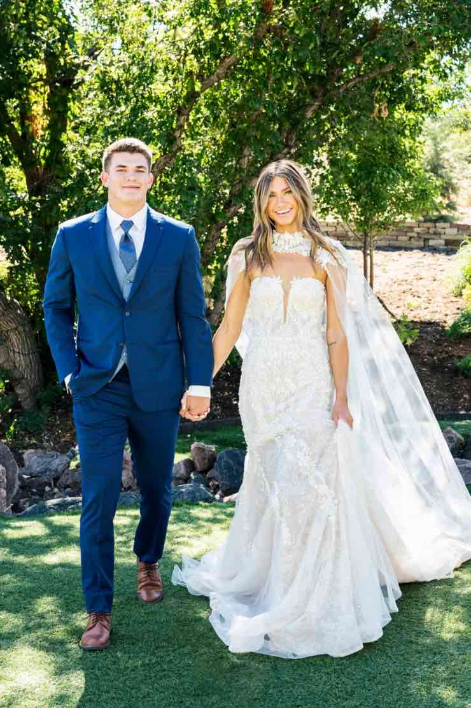
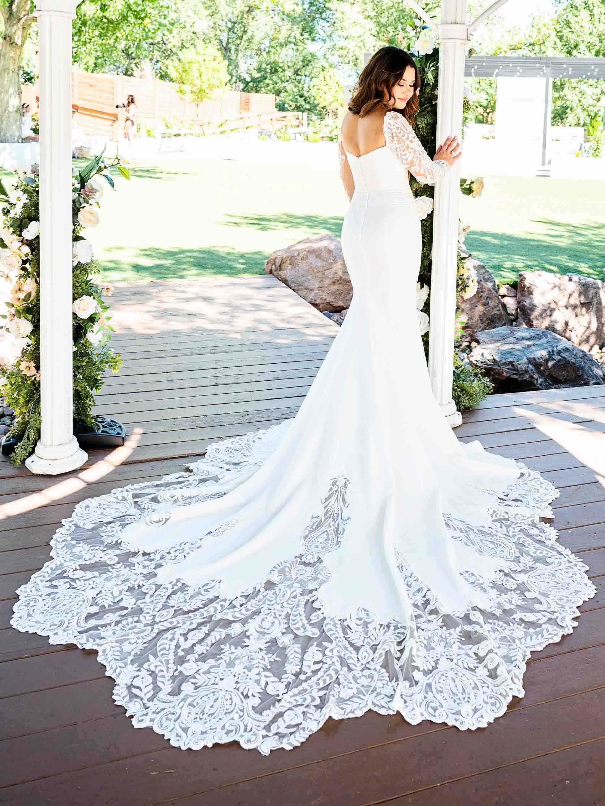
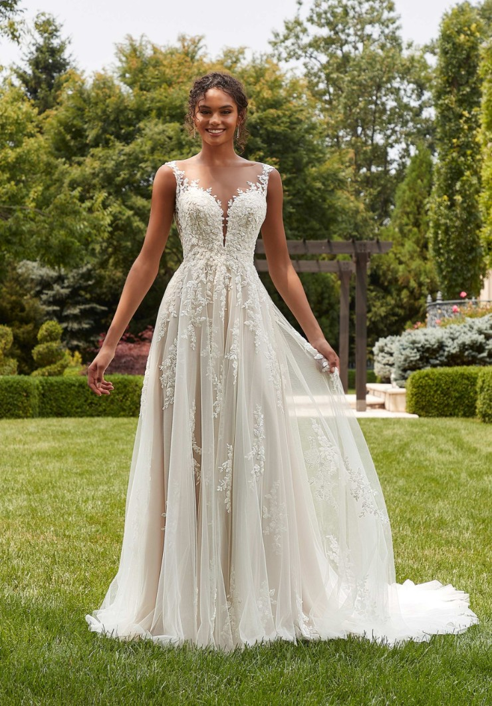

Posted on June 18, 2025
Where to Buy a Wedding Dress in Colorado Springs
Finding the perfect wedding dress is one of the most exciting parts of planning your big day. Whether you’re dreaming of a classic ball gown, a modern silhouette, or a boho-luxe look to match Colorado’s majestic landscapes, Colorado Springs has a variety of fantastic bridal boutiques ready to help you say “yes” to the dress.
1. Something New Boutique
Website: somethingnewboutique.com
Something New Boutique is one of the most well-known bridal shops in Colorado Springs. Located off North Academy, this boutique offers a stunning range of designer gowns from labels like Essense of Australia, Martina Liana, and All Who Wander. Brides rave about the personalized attention they receive in their private bridal suites and the caring consultants who make the experience feel magical.
In addition to wedding dresses, Something New carries bridesmaid dresses, accessories, and even tuxedos—making it a convenient one-stop-shop for your wedding wardrobe.
2. The Bridal Collection
Website: thebridalcollection.com
Though technically located in nearby Denver, many Colorado Springs brides find the drive worth it for the selection and experience at The Bridal Collection. With more than 300 designer gowns in stock and a commitment to philanthropic giving, this shop is a great place to find a unique and meaningful dress.
Their collection includes sizes for all body types, and they have both budget-friendly and high-end options. Their team is known for being both professional and warm—a huge plus when you’re choosing such a personal item!
3. Dora Grace Bridal
Website: doragrace.com
Dora Grace Bridal is a charming boutique located in Fort Collins with a satellite pop-up location that frequently serves southern Colorado brides. Known for its relaxed atmosphere and inclusive sizing, Dora Grace has a curated selection of gowns with designers like Lillian West, Madi Lane, and Justin Alexander.
The staff is known for being honest, kind, and focused on what YOU want—not just upselling a pricey dress. If you’re looking for a boutique that prioritizes comfort, diversity, and ease, Dora Grace might be your perfect match.
Tips for Dress Shopping in Colorado Springs
- Book appointments early: Most boutiques book up on weekends—try for a weekday for more time and attention.
- Set a realistic budget: Gowns typically range from $1,200–$3,000. Be honest with your consultant upfront.
- Bring the right crew: Choose 1–3 people whose opinions you value and who support your vision.
- Be open-minded: Many brides fall in love with a gown that’s completely different from what they imagined!
Final Thoughts
Colorado Springs offers an inspiring range of wedding dress shopping experiences. Whether you’re looking for high-end glam, romantic boho, or classic chic, you’re sure to find something that makes you feel beautiful and confident. Make sure to start early, trust the process, and most importantly—have fun finding the dress that tells your story.
If you’ve found your dress and need an affordable, experienced wedding photographer in Colorado Springs to capture the magic—I’d love to work with you!